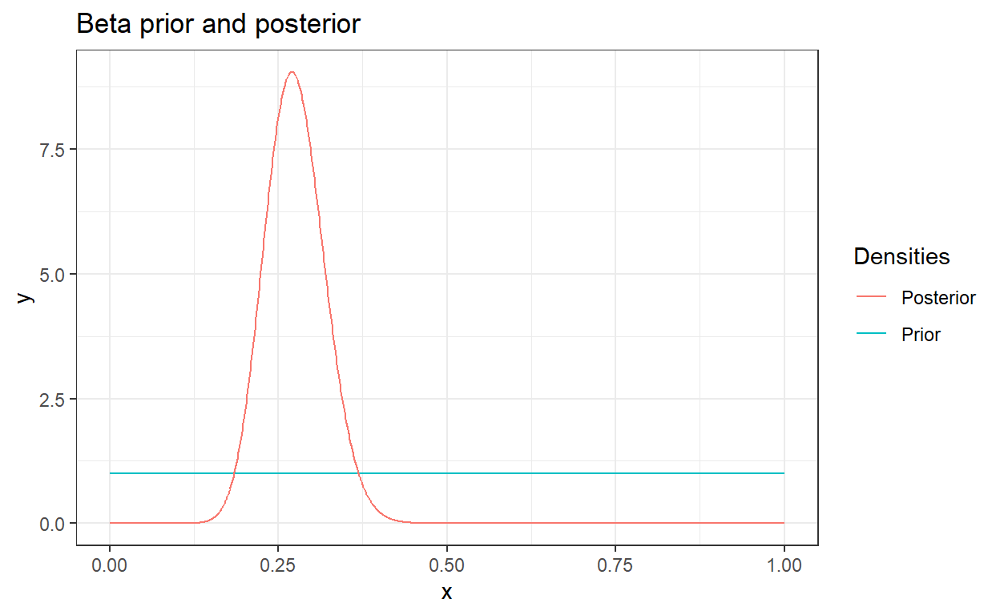

Ce premier exercice a pour objectif de simultanément prendre en main JAGS ainsi que de constater la facilité que ce genre de procédure procure. Le framework JAGS est en réalité un wrapper à une librairie C++ JAGS qui permet d’automatiser les procédures d’inférences via des méthodes MCMC ou encore d’inférence approchée. Bien que R JAGS existe, le code de base est toujours rédigée via une syntaxe C(++).
Ce premier exercice reprend le pile ou face du TP 1. Nous y avons notamment vu comment calculer la posterior d’un modèle où la vraisemblance est une loi de Bernoulli et l’a priori, une Beta. La loi a priori est donnée par : \[\begin{equation*} \pi(\theta)=\frac{\Gamma(\alpha+\beta)}{\Gamma(\alpha)\Gamma(\beta)}\theta^{\alpha-1}(1-\theta)^{\beta-1}, \theta\in[0,1], \alpha,\beta\in]0,+\infty[ \end{equation*}\] où \(\alpha\) et \(\beta\) sont les hyper-paramètres.
et la vraisemblance par: \[\mathcal{L}(\mathcal{D})=\prod_{i=1}^N \theta^{x_i}(1-\theta)^{1-x_i}=\theta^{m}(1-\theta)^{N-m}.\]
En combinant a priori et vraisemblance, nous obtenons :
\[\Pi(\theta|\mathcal{D};\alpha,\beta)\propto\theta^{\alpha+m-1}(1-\alpha)^{\beta+N-m-1},\]
soit une loi Beta de paramètres
\(\alpha^\prime=\alpha+m\)
et
\(\beta^\prime=\beta+N-m\)
Supposons que nous ayons la configuration suivantes.
N = 100
p = 0.75
samples <- rbinom(n=N, size = 1, prob=p)
alpha <- N - sum(samples)
beta <- sum(samples)
x <- seq(0, 1, 0.001)
prior <- data.frame(x=x, y=dbeta(x, 1, 1))
posterior <- data.frame(x=x, y=dbeta(x, alpha + 1, beta + 1))
ggplot() +
geom_line(data = prior, mapping = aes(x = x, y = y, color='Prior')) +
geom_line(data = posterior, mapping = aes(x = x, y = y, color='Posterior')) +
labs(title='Beta prior and posterior', color='Densities') +
theme_bw()
Il existe cependant d’autres stratégies permettant d’obtenir de l’information quant à la loi a posteriori. Les méthode MCMC permettent d’échantilloner selon cette loi et les méthodes approchées d’en obtenir une approximation.
Exercice 1 : Reprenez le modèle précédent et décrivez le dans le cadre du framework JAGS (Just Another Gibbs Sampler). Proposez une inférence et déterminez l’espérance et la variance du paramètre latent (i.e. \(p\)). Affichez en particulier la densité empirique et la trace afin de déterminer la convergence de notre séquence MCMC.
samples <- rbinom(n = 1000, size = 1, prob = ???)# first step, let us setup the number of samples
N = length(samples) # samples is the list from the exercise# second step, let us write the model on disk
# constructing the model
# each sample has a bernoulli distribution with parameter p
# however, we don't know p and we want to infer its probability distribution
write("
model {
for (i in 1:N) {
x[i] ~ dbern(p)
}
p ~ dbeta(1, 1)
}", "pile_ou_face.jags")# Third step, constructing the model
# data contains the list of variables that are needed by our model, here the list of samples
# and the number of samples
# n.chains refers to the fact that the inference will be run 4 times from
# 4 different initialization. Thus, we reduce the likelihood of being stucked in a local minima
# without knowing it and can have more robust convergence checks
# n.adapt is the number of samples that will be generated to tune the sampler parameters
model <- jags.model(
"pile_ou_face.jags",
data=list('x'=samples, 'N'=N),
n.chains=4,
n.adapt=1000
)# coda.samples actually calls jags.samples but encapsulate the results in a more
# interesting structure. Here we sample the posterior of our model.
# in particular we marginalize the parameter p and ask for 1000 samples
samples = coda.samples(model, c('p'), 1000)
# here the exemple is simple, but in case of a more complex scenarios,
# burning in some samples is required
# samples <- window(samples, start=50) # burn 50# what about convergence?
# a nice strategy to check convergence is to plot the trace
# the trace will show you if your sampler actually converged
s <- ggs(samples)
ggs_traceplot(s_p) +
ggtitle("Affichage de la trace") +
theme_bw() +
theme(legend.title = element_blank())
# ggmcmc can also create a pdf reports of multiple elements and plots
# ggmcmc(s)# plot the empirical density
ggs_density(s) +
ggtitle("Densité empirique") +
theme_bw() +
theme(legend.title = element_blank())
# what about the mean and standard deviation of p's distribution
summary(samples)N = length(samples)
# constructing the model
write("
model {
for (i in 1:N) {
x[i] ~ dbern(p)
}
p ~ dbeta(1, 1)
}", "pile_ou_face.jags")
# initializing model
model <- jags.model("pile_ou_face.jags", data=list('x'=samples, 'N'=N), n.chains=4, n.adapt=1000)
# sampling from the posterior
samples = coda.samples(model, c('p'), 1000)
s <- ggs(samples)
ggs_traceplot(s) +
ggtitle("Affichage de la trace") +
theme_bw() +
theme(legend.title = element_blank())
ggs_density(s) +
ggtitle("Densité empirique") +
theme_bw() +
theme(legend.title = element_blank())
summary(samples)Nous disposons maintenant de \(N\) pièces. Nous savons qu’il y a deux types de pièces : (1) celles qui tombent avec probabilité \(p_1\) sur face et celles qui tombent avec probabilité \(p_2\) sur face. Nous ne connaissons pas le ratio \(\nu\) de chacune des catégories. Pour déterminer ces différents éléments, nous réalisons l’expériences suivantes. Chacune des \(N\) pièces est envoyée en l’air \(M\) fois. On enregistre chacun des piles et des faces dans un tableau samples de dimension \(N\times M\).
Exercice 2 : Construire un modèle permettant d’inférer ces différentes quantités. Affichez en particulier la trace pour vérifier la convergence et la densité empirique de \(p=\{p_1, p_2\}\) et déterminez \(\mathbb{P}(\nu<0.5)\).
# N is the number of coin, M the number of flips per coin and samples the results# première étape, la construction du modèle
write("
model {
for (i in 1:N) {
for (j in 1:M) {
x[i, j] ~ dbern(p[t[i]+1])
}
t[i] ~ dbern(nu)
}
nu ~ dbeta(1, 1)
p[1] ~ dbeta(5, 1)
p[2] ~ dbeta(1, 5)
}", "piece_truquee.jags")
# Chacun des tirages de notre pièce est distribué selon une loi de Bernoulli dont le paramètre dépend
# de la catagorie p[t[i]+1]
# la probabilité de la catégorie d'une pièce dépend du ratio de la catégorie t[i] ~ dbern(nu)
# et on fixe nos priors sur ces paramètres nu ~ dbeta(1, 1),
# p[1] ~ dbeta(5, 1), p[2] ~ dbeta(1, 5)# deuxième étape, on initialise le modèle et on simule
# initializing model
model <- jags.model("piece_truquee.jags", data=list('x'=samples, 'N'=N, 'M'=M), n.chains=4, n.adapt=1000)
# on garde p et nu qui sont les deux paramètres qui nous intéressent.
# si on avait voulu connaître la catégorie de chaque pièce, il aurait fallu simuler t
# également
post_samples = coda.samples(model, c('p', 'nu'), 1000)# on affiche les plots et on sélectionne le paramètre qui nous intéresse
s_p <- ggs(post_samples, family='p')
s_nu <- ggs(post_samples, family=c('nu'))
ggs_traceplot(s_p) +
ggtitle("Affichage de la trace (p)") +
theme_bw() +
theme(legend.title = element_blank())
ggs_traceplot(s_nu) +
ggtitle("Affichage de la trace (nu)") +
theme_bw() +
theme(legend.title = element_blank())
ggs_density(s) +
ggtitle("Densité empirique") +
theme_bw() +
theme(legend.title = element_blank())# concernant la probabilité sur nu,
for (i in 1:4) {
print(sum(post_samples[[i]][,1]<0.5)/1000)
}
# 1000 est le nombre d'échantillon considéréswrite("
model {
for (i in 1:N) {
for (j in 1:M) {
x[i, j] ~ dbern(p[t[i]+1])
}
t[i] ~ dbern(nu)
}
nu ~ dbeta(1, 1)
p[1] ~ dbeta(5, 1)
p[2] ~ dbeta(1, 5)
}", "piece_truquee.jags")
# initializing model
model <- jags.model("piece_truquee.jags", data=list('x'=samples, 'N'=N, 'M'=M), n.chains=4, n.adapt=1000)
post_samples = coda.samples(model, c('p', 'nu'), 1000)
s_p <- ggs(post_samples, family='p')
s_nu <- ggs(post_samples, family=c('nu'))
ggs_traceplot(s_p) +
ggtitle("Affichage de la trace (p)") +
theme_bw() +
theme(legend.title = element_blank())
ggs_traceplot(s_nu) +
ggtitle("Affichage de la trace (nu)") +
theme_bw() +
theme(legend.title = element_blank())
ggs_density(s_p) +
ggtitle("Densité empirique") +
theme_bw() +
theme(legend.title = element_blank())
for (i in 1:4) {
print(sum(post_samples[[i]][,1]<0.5)/1000)
}